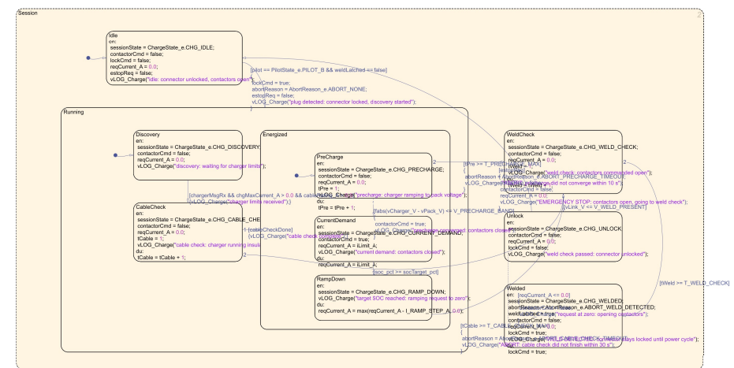
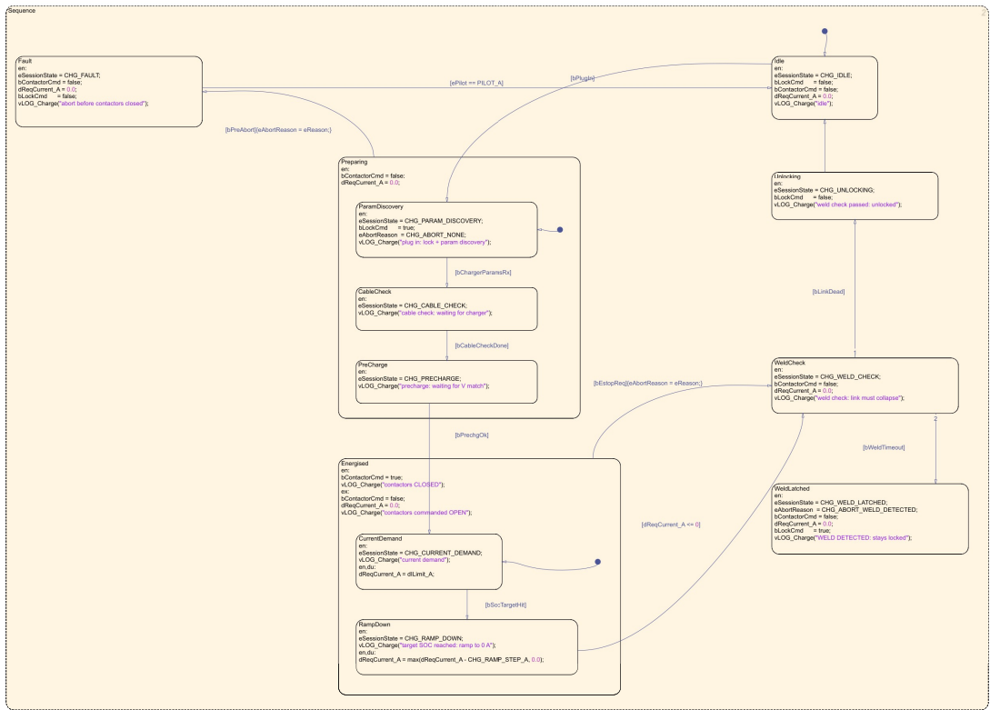

Same prompt, same model, two machines — one had the rules loaded
The charging state machine of a DC fast-charging sequencer, laid out by an AI agent.
✗ Without the rules

Guards and their action bodies sit
on top of one another
and spill across state boxes. Every arc carries its full expression inline.
✓ With the rules

Guards named once elsewhere, so each arc reads
[bPrechgOk]
and nothing more. States in execution order, straight arcs,
nothing overlapping
.
Rule 4 —
geometry is part of the deliverable
· Rule 3 —
follow the mechanism that already exists
github.com/Ahrazshamim/model-based-design-discipline